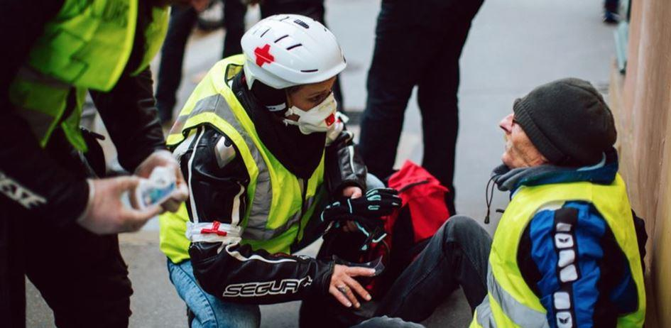

Avec tes vœux pour 2019, tu m’as envoyé une invitation à « défendre la République » face aux « factieux qui foulent au pied ses valeurs ».
En d’autres circonstances j’aurais considéré ton message avec intérêt. Hélas cette fois-ci je n’en ferai rien. Parce que les circonstances sont ce qu’elles sont et à mon niveau minuscule j’ai contribué à ce qu’elles soient ce qu’elles sont.
Je suis un gilet jaune, Monsieur le Sénateur. Je suis un révolté. J’ai connu les outre-mondes du chômage, de la précarité ; j’ai connu les angoisses indicibles des fins de mois qui adviennent au milieu du mois et les séances stakhanovistes d’envois de curriculum vitae qui restent désespérément sans réponse.
Les choses avaient plutôt bien commencé, pourtant : au tournant des années 85 nous étions quelques étudiants qui faisions du militantisme. Nous étions membres d’un groupuscule qui dissertait doctement sur les contours de la social-démocratie. Il y avait un futur ministre, un futur secrétaire d’État, toi, futur sénateur, et moi, futur rien. Tous nous faisions des études de Sciences Politiques. A tous des professeurs chenus enseignaient la pensée neutre et équilibrée qui produit des inspecteurs des finances et des sous-préfets.
Je me souviens que dès le surgissement de Jean-Marie Le Pen, invité à l’Heure de Vérité sur ordre de Mitterrand notre idole, tu t’étais empressé de monter un « comité de vigilance contre l’extrême-droite. » La bête immonde revenait, il fallait que les petits-bourgeois fassent quelque chose.
Je n’ai pas souvenir que le comité de vigilance ait produit contre l’extrême-droite renaissante autre chose que des réunions d’arrière-salle mais tu avais réussi ton coup : le combat contre Le Pen, ça faisait rencontrer des gens, ça ouvrait des portes. Le combat contre Le Pen, c’était tendance. Les colloques sur la République en danger, les SS revenus aux portes de Paris, ça mobilisait tout le gratin du droit-de-l’hommisme, ces grands bourgeois d’immeubles haussmanniens qui enjoignent au populo de penser comme eux.
Pendant ce temps-là, pendant la vigilance contre l’extrême-droite, tous les idéaux portés par le Programme Commun tombaient les uns après les autres : « Changer la vie » ? Laurent Fabius nous disait que c’était devenu impossible, au nom de la rigueur. Exit l’avant-garde du prolétariat, place à « la France qui gagne » et à Bernard Tapie. Sortir de la vassalité atlantiste ? Mitterrand nous disait que non, finalement, nous n’allions pas sortir de la vassalité atlantiste, parce que « les missiles sont à l’est, et les pacifistes à l’ouest ».
Le chômage augmentait, la « nouvelle pauvreté » devenait le concept à la mode. Les TUC et SIVP institutionnalisaient les emplois précaires payés à la fronde. Le RMI, cette fausse bonne idée de la « deuxième gauche », allait bientôt, sous les oripeaux de la grande conquête sociale, parachever la trahison. Et parallèlement on cherchait à nous vendre l’Europe des banques comme horizon indépassable des peuples.
Ta gauche, notre gauche était devenue une droite libérale comme les autres.
C’était il y a trente ans. Un peu plus, un peu moins. Et donc la « vigilance contre l’extrême-droite », ça avait du bon : le futur ministre, le futur secrétaire d’État intégraient les cabinets ministériels. Toi, Monsieur le Sénateur, tu avais un peu plus de mal, je me souviens bien. Je me souviens bien de tes monologues rageurs :
« Tu te rends compte ? B… cherche un chef de cabinet, il n’a même pas pensé à moi ! J’ai monté le comité à sa demande, je me suis fait ch… jour et nuit à organiser des réunions, depuis des mois, et il n’a même pas pensé à moi comme chef de cabinet ! »
Je t’écoutais. Tu pestais comme Rastignac. Un Rastignac de centre-gauche. Mais ton tour allait venir quand même. Chargé de mission. Dans un ministère de second rang. C’était sous Edith Cresson. Ou Bérégovoy.
Trente ans ont passé. Tu es devenu Sénateur. Et moi je suis devenu ce que je promettais de devenir : un velléitaire à rêveries splendides, un peu poète, un peu prosateur. Un type plutôt honnête aussi, possiblement. Et naïf. J’ai payé cela de plusieurs chômages. Je le paye toujours.
Peut-être très tôt y-a-t-il eu aussi une forme de lucidité morose, l’idée dès vingt ans que la montée de la gauche Fabius au détriment de la gauche Mauroy signait la fin d’un idéalisme d’État, un idéalisme qui ne devait jamais renaître. La manip des grèves de décembre 1986 qui nous fit descendre dans la rue pour au final favoriser cette social-démocratie fadasse contribua aussi à ancrer l’idée que Tonton nous prenait vraiment pour des cons.
Les décennies ont passé. Chaque année tu m’envoies tes vœux. Chaque année j’y réponds. Cette année ma réponse est plus longue. Parce qu’il y a eu le 17 novembre 2018.
Le 17 Novembre, ça a commencé sur les réseaux sociaux. D’abord des pages, des groupes épars. Par milliers. Des micros-révoltes bordéliques, vacillantes. Ici un routier de Montluçon qui appelle à manifester, là des retraités qui dénoncent l’ultra-fiscalisme, des jeunes mamans qui refusent la fermeture de l’école du village.
Ça a commencé loin des syndicats, loin des partis politiques, loin des « associatifs » et des « humanitaires ». Ça a commencé dans la France qui ne sait plus le vingt du mois comment nourrir les gosses, cette France que tu ne voyais pas, que tu ne vois toujours pas. Ça a commencé dans la France à laquelle j’appartiens, la France de l’apéro et des copains, cette France qu’avec BHL tu soupçonnes d’être néo-pétainiste au seul motif qu’elle aime son coin de campagne !
Au chaud dans les studios des chaînes tout-info les éditorialistes, les experts et les pubards n’avaient rien vu venir. Ils se vengeront plus tard de leur cécité et de leur amateurisme. Mais donc de ce magma de colères, de frustrations, de ras-le-bol, va émerger un mouvement social d’une ampleur et d’une durée inédite, un mouvement sans chefs, sans préavis, sans slogans compassés entre Bastille et République. Après la lente surrection, l’insurrection manifeste des cocus, des délaissés de vos politiques, l’insurrection de français fraternels et libres déterminés à aller vous arracher l’égalité avec les dents.
Ça a commencé il y a deux mois. Nous avons entendu les mensonges d’État. Nous avons subi, nous subissons la violence d’État. Entre deux hommages larmoyants aux CRS, tu n’as pas eu le moindre mot pour les gens éborgnés par les flashballs, pour les gens aux mains arrachées par les grenades de désencerclement ! Ce sont des Français, aussi. Aucun d’entre eux n’est un blackblock. Encore moins un membre de cette « ultra-droite » dont on sait si peu de choses qu’il est légitime de se demander s’il ne s’agit pas d’une légende urbaine ! Ce sont des Français ces blessés. Des Français fauchés, mutilés. Pour la plupart d’entre eux à l’aube de leur vie.
Ce sont des familles françaises, aussi, ces familles paisibles qui célèbrent Noël, le 1er de l'an ; ces familles avec lesquelles je défile et qui jusque sous les lacrymos déplorent la pénibilité du travail des forces de l'ordre ! C'est ce peuple-là, cette France des profondeurs, que toi et tes semblables de La République En Marche insultez tous les jours !
Et puis il y a la peur, aussi. Une peur inédite. Une peur exotique, pour ainsi dire, quand on a grandi dans un État libre, quand on est un enfant de la République. Cette peur, c’est celle que je ressens quand je vois un gendarme mobile porter une mitrailleuse lourde ; c’est celle que je ressens quand je vois des policiers de la BAC postés à l’angle d’une petite rue, et quand l’un d’entre eux, le visage dissimulé par un masque effrayant, me « branche », littéralement, en désignant son arme ; cette peur c’est aussi, et peut-être surtout, la terreur en germe derrière les mots : « nous allons faire évoluer le dispositif de maintien de l’ordre », dit le Premier Ministre. En Macronie, on sait ce qui se cache derrière les mots, on sait ce qui se cache derrière le verbiage de management, on sait ce qui se cache derrière évoluer : le renforcement de la répression, encore plus de blessés, peut-être des morts. On sait ce qui se cache derrière « faire évoluer la gestion des manifestants violents » : l’arbitraire de décisions laissées à l’appréciation des forces de l’ordre, et notamment cette idée qu’on pourra brutalement interpeller et brutaliser un militant pacifique mais déterminé parce que tes amis du gouvernement se garderont bien de distinguer la protestation d’un citoyen déterminé des exactions d’un casseur violent.
La peur, Monsieur le Sénateur, c’est cela le pire : la peur d’être insulté, menacé, brutalisé, arrêté, parce qu’avec des millions de Français j’ai décidé de relever la tête ; j’ai décidé de dire que dans la cinquième puissance du monde chaque femme, chaque homme, chaque enfant de France devait pouvoir arriver à la fin du mois la tête haute et le ventre plein !
Cette peur, Monsieur le Sénateur, je ne te la pardonnerai jamais.
Et donc, Monsieur le Sénateur, je vais décliner ton invitation à « défendre la République face aux factieux qui foulent au pied ses valeurs. » Je suis un de ces « factieux », tu l’auras compris.
Je lis que tu vas organiser un colloque dans la ville où tous les deux nous sommes nés. Un colloque auquel participera l’ancien ministre que nous côtoyâmes il y a trente-cinq ans et dont les tweets obséquieux disent en quelques signes toutes les redditions de la gauche. Un colloque auquel participera cette députée, ancienne lobbyiste, qui court les plateaux-télé pour expliquer combien il est juste et bon de réprimer les chômeurs, les précaires, les pauvres. Un colloque où, entre bons bourgeois de centre-gauche et de centre-droit, vous allez continuer de vous auto-congratuler, où il se trouvera bien quelque avocat richissime pour plaider « les institutions bafouées » et autres chromos de la Geste républicaine mis au service exclusif de vos privilèges.
Alors non, Monsieur le Sénateur, je ne viendrai pas à ton colloque. Il sent le rance, ton colloque. Comme tes idées, comme tes amis. Vous m’évoquez les émigrés de Coblence, mais sans le charme ombrageux des princes en exil.
Je ne sais pas ce que tout ça va devenir. De cette incertitude et des divers désordres à l’œuvre vous allez peut-être, toi et ta caste, sortir à peu près indemnes. Mais ce n’est pas sûr. En fait, à cette heure-ci, ce n’est pas sûr du tout. Impossible de vous abriter derrière un De Gaulle du 30 mai 1968. Cette fois-ci il n’y a à disposition que du Griveaux et du Castaner. Pas sûr que ça suffise. Pas sûr du tout.
Moi non plus je ne sais pas ce que je vais devenir. Je suis du mauvais côté de la société. Mais si je ne sais pas ce que je vais devenir je sais donc où je suis : avec les Gilets Jaunes, avec les Hommes debout, avec la France de Valmy enfin rentrée chez elle, la vraie France de tous et de chacun dressée de nouveau pour éclairer le monde.
Partager cette page